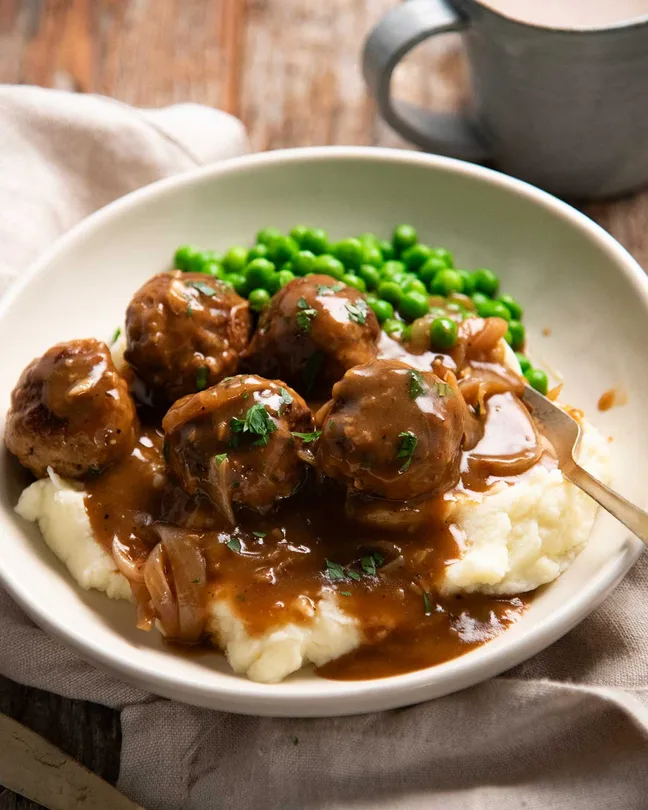

Back to Home
Meatballs with Onion

Description
Meet the latest obsession in the world of desserts!-Meatballs with Onion!
A savory dish made with seasoned meatballs and caramelized onions.
It's a perfect balance of flavors that will leave you wanting more.
Serve it hot for a hearty meal or as an appetizer for your guests.
Ingredients
- 1 lb ground beef
- 1/2 cup chopped onion
- 1/4 cup breadcrumbs
- 1/4 cup grated Parmesan cheese
- 1/4 cup chopped parsley
- 1 egg
- 1 tsp garlic powder
- 1 tsp dried oregano
- Salt and pepper to taste
- 2 tbsp olive oil
Steps
- In a large bowl, combine the ground beef, chopped onion, breadcrumbs, grated Parmesan cheese, chopped parsley, egg, garlic powder, dried oregano, salt, and pepper. Mix until well combined.
- Form the mixture into small meatballs, about 1 inch in diameter.
- Heat the olive oil in a large skillet over medium heat. Add the meatballs and cook until browned on all sides, about 5-7 minutes.
- Remove the meatballs from the skillet and set aside.
- In the same skillet, add the remaining chopped onion and cook until caramelized, about 10 minutes.
- Return the meatballs to the skillet with the caramelized onions and cook for an additional 5 minutes, until the meatballs are cooked through.
- Serve the meatballs with the caramelized onions on top. Enjoy!